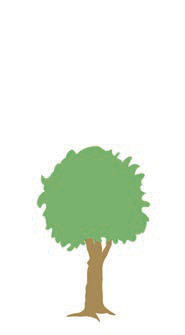
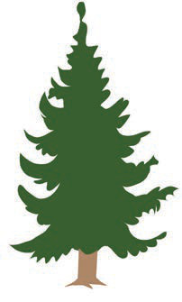
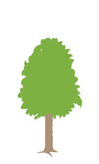

(a) Complete the dialogue below by adding the missing information using the picture of the three stones.
Teacher: Stones A, B, and C in the picture are of the same size, isn't that so?
Pupil: No, they are different.
Teacher: Okay.
How are they different?
For example, what is the difference between Stone A and Stone B?
Pupil: Stone B is [[blank:item-1]] than Stone A.
Teacher: Yes, you are right.
In other words, you can also say, Stone A is not as [[blank:item-2]] as Stone B.
Teacher: What about Stone C?
Pupil: Stone C is [[blank:item-3]].
Teacher: Is stone B bigger than stone C?
Pupil: [[blank:item-4]], Stone C is [[blank:item-5]] than Stone B.
Stone C is also [[blank:item-6]] than Stone A.
Thus, Stone C is [[blank:item-7]].
Teacher: Well done!
You have correctly described the sizes of the three stones.
(b) Look at the trees in the picture and complete the following dialogue.



Pupil 1: Trees A, B and C are tall.
Which tree is the tallest?
Pupil 2: Tree [[blank:item-8]] is the tallest of all.
Pupil 1: Is tree A taller than tree B?
Pupil 2: [[blank:item-9]] (Yes, No) tree A is [[blank:item-10]] than tree B.
Pupil 1: What about tree C, is it taller than tree B?
Pupil 2: [[blank:item-11]] (Yes, No) tree C is taller than tree B.
Pupil 1: How is tree C different from tree A in terms of height?
Pupil 2: Tree C is [[blank:item-12]] than tree A, and tree C is taller than tree B.
Thus, tree C is the tallest of all.
We use comparatives and superlatives to compare people, animals, or things.
Comparatives show differences between two things.
For example, “A ruler is longer than a pencil”.
Superlatives show characteristics of something or someone that stands above the rest: the highest or lowest quality among three or more things, people, or other objects.
For example, “Lake Tanganyika is the deepest lake in Africa,” or “Lake Victoria is the largest freshwater lake in Africa”.